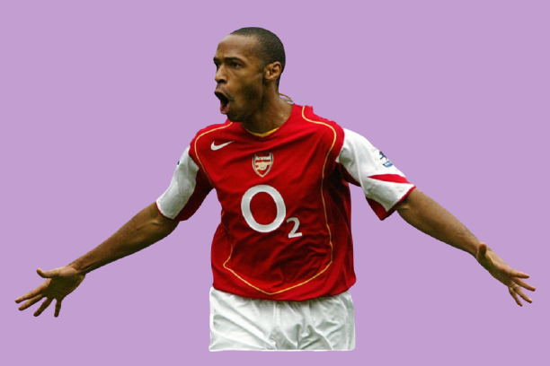
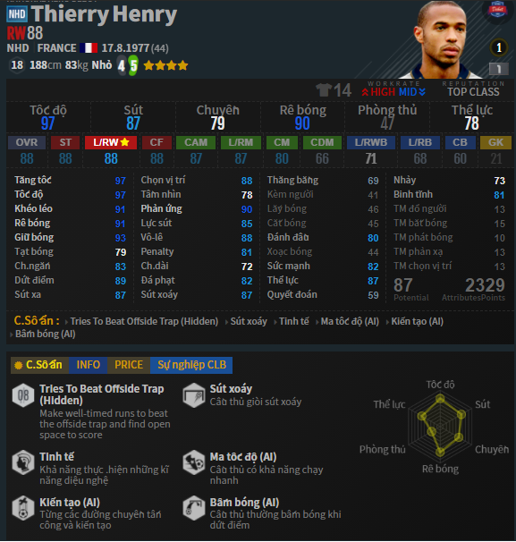
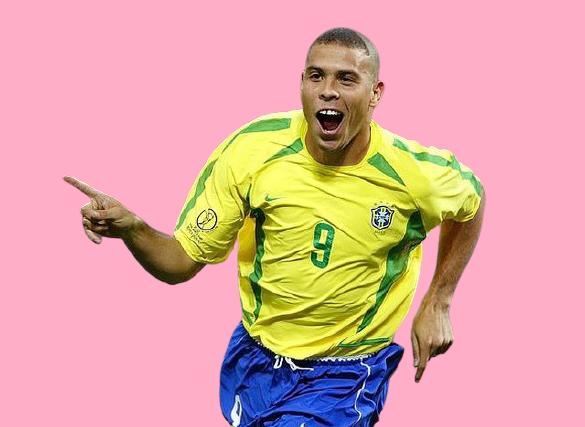
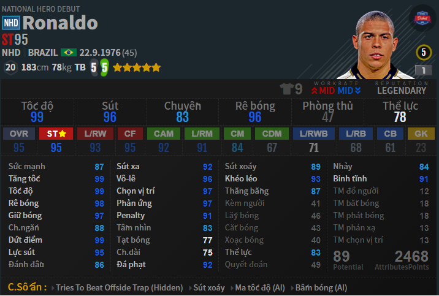
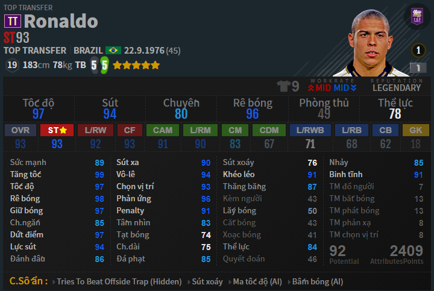
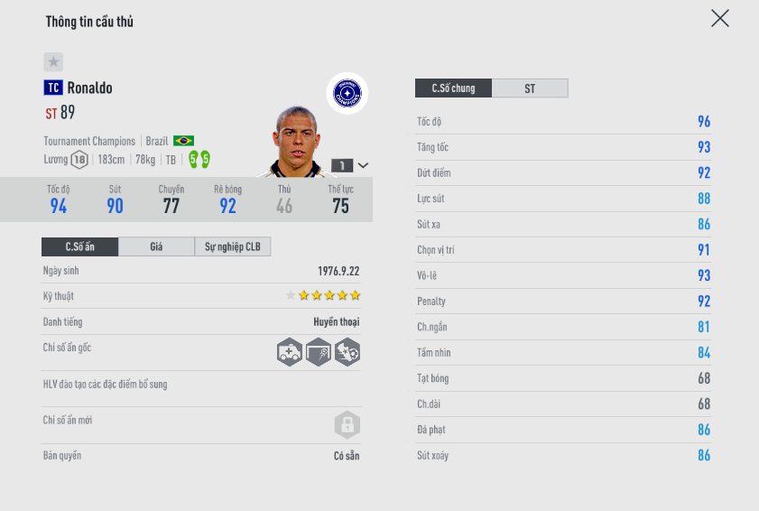
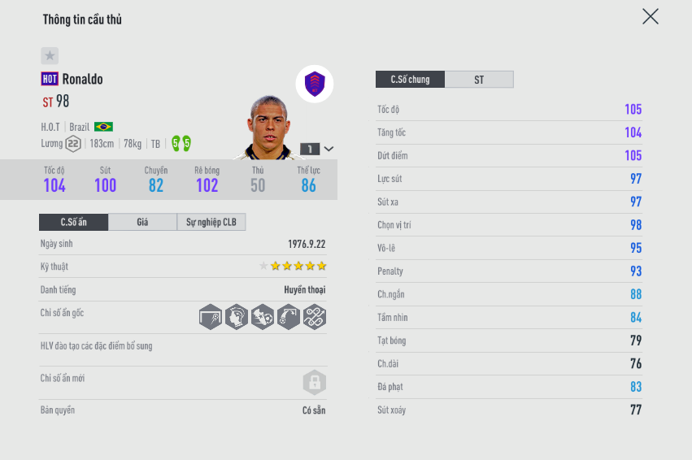
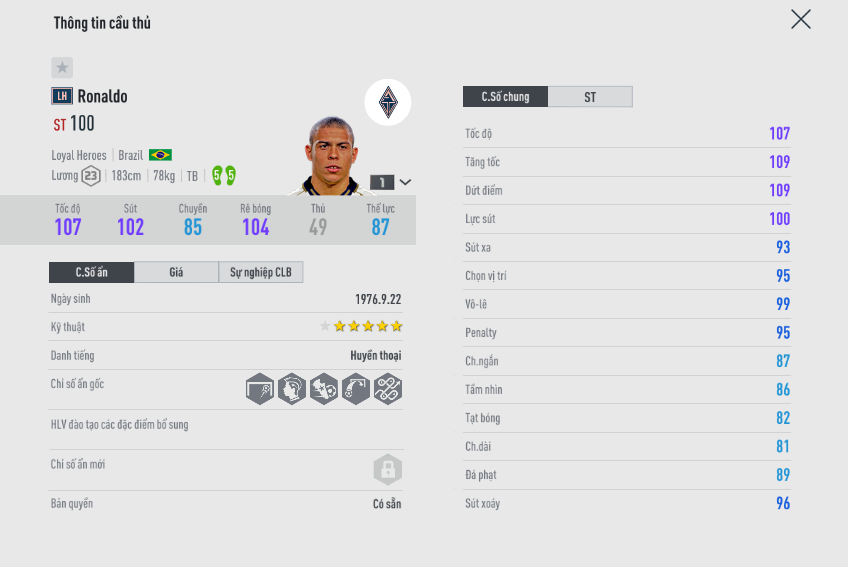
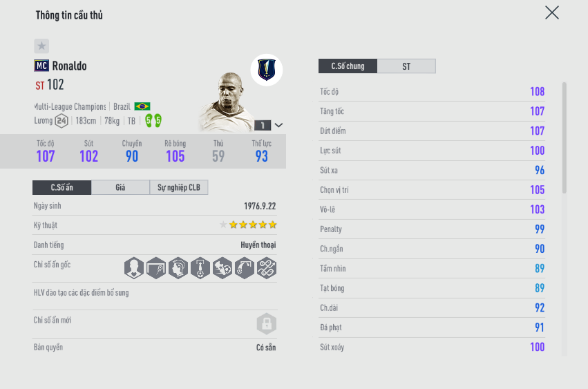

Hôm nay mình xin review 5 con hàng ngon bổ và cực rẻ . Ngon nhất trong tầm giá từ 1B (bp) đến 5B (bp)
Hiện nay Henry trên sever Viêt Nam chỉ có 7 mùa thẻ Thierry Henry đó là icon, lh,hot,tt,nhd, mc và tc
Hôm nay minh xin review về Thierry Henry 1 huyền thoại người Pháp , có biệt danh là 'Đứa Con Của Thần Gió ' bởi vì tốc độ ông rất nhanh nên người ta miêu tả tốc độ anh với gió ! VÀ rất phù hợp với meta hiện tại hoặc có thể là mọi meta ( đá tốc độ ) chạy nhanh rất là lợi có thể đây sang cánh , có thể đá St đều được với 1 chiều cao lí tưởng ( 1m88) Thierry Henry có thể nói là 1 trong nhưng con hàng vừa cao vừa chạy nhanh ( có thể kể đến là CR7 , Van Nistenroy , ...)
Như mình đã nói ở trên Henry ở sever Việt Nam đang có 7 mùa giải nhưng vì hôm nay chúng ta đang nói đến tầm tiền từ 1b đến 5b nên sẽ không có icon. Nào 'here we go' ...
Thierry Henry: NHD
Đây là mùa giải Thierry Henry đá cánh ( RW ) các bạn nhé! [ovr 88; thể hình nhỏ ; cao 1m88 ; nặng 88kg]
Tuy nhiên, bạn có thể đẩy Henry vào đá ST ( cấm) như bình thường nhưng con hàng sút tốt , tốc độ nhanh như Rô 7 , Rô 9( chắc k ai để Rô béo đá cánh đâu nhỉ😂) , cụ Eusebio, Sheva, chúng ta đều có thể đẩy sang cánh hoặc đá St, với lại vị trí mặc định của cầu thủ k quan trọng cho lắm! Có thể đá vị trí nào tùy các bạn xắp xếp và đá hợp thì 'Giã' thôi! AI mùa này thì rất ngon mình k hiểu tại sao mấy mùa đầu tiên thì Nexon luôn làm mùa đó trở nên ngon nhất! Nếu anh em có đủ tiền thì có thể dùng Henry NHD +8 nó thực sự rất bá đạo nếu nói về +1 thì chắc chắn k ai chơi , +5 cũng vậy đá k ngon nhưng +8 vẫn bá như thường khi nào +8 k ngon,k còn bá thì lúc đó mùa này coi như 'bỏ' giờ AE nếu đủ tiền có thể mua +8 rất dễ chỉ với 19-20 tỏi nhưng mình khuyên khích AE nếu bỏ ra mua 20 tỏi mua Henry NHD +8 thì có vẻ hơi tiếc , nó chắc chắn k bằng mùa thẻ MC +5 . Mình sẽ review sau cho AE .
Đây là mùa được buff danh tiến lên Huyền Thoại AE thấy ghê chưa ? tăng lên được 1 2 chỉ số so với mùa NHD và đặc biệt Henry TT thì thôi! ZD bao bá , chỉ cần TT +5 thôi là bao bá luôn nhưng điểm yếu của Henry mùa này là chanh chấp k tốt dễ bị đấm ( đó là +5 còn +8 hơi mặc nhưng AI +8 thì thôi trên cả tuyệt vời ) còn lại thì bao ngon AE nhé
Henry mùa TC có thể hình TB cứng cáp hơn và có chỉ số ẩn qua người + được buff chỉ số nhưng mùa này mình đánh giá là phế nhất của Henry ... Nexon buff chỉ số qua người , buff thể hình rồi giảm danh tiếng xuống còn ngôi sao :-) trong khi TT là huyền thoại ... nhìn chỉ số rất đẹp nhưng khi vô trận thì rất ngu :( và mùa TC cũng chính là mùa giải các cầu thủ có chỉ số đẹp mà ingame k ngon từ rô béo cho đến gullit cho đến henry đều k ổn. Đây là 1 số review của mình về henry TC
Nhưng nói đi cũng phải nói lại Henry mùa TC nếu + cao như +7, +8 thì thôi ZD bao khét chạy chỗ thông minh, chạy tách người, tỳ đè tạm được, đánh đầu ngon vì biết chọn vị trí, +8 thì ZD với đóng xa bug thì tuyệt vời đáng để trải ghiệm
Mùa này có chỉ số Sút Xoáy, Ma Tốc Độ, Kiến Tạo , Bấm Bóng, Tốc độ được buff lên cực kì kinh dị lun và đây cũng là 1 trong những mua ngon nhất của Henry có thể nói các cầu thủ mùa HOT rất ngon nó đúng với tên mùa ( HOT : hero of team) chỉ số thì tuyệt đẹp , lương được đẩy lên tới 21. Henry mùa này thì mạnh hơn về tranh chấp , tốc độ nhanh , dức điểm ok , rê bóng ok và đây cũng là 1 phiên bản nâng cấp của Henry. Đặc biệt mùa giải này có khả năng tranh chấp ok hơn mấy mùa trước nha AE còn những mùa giải kia rất yếu k chanh chấp đc với các hậu vệ cao to. Hợp đá 1 ST hơn chạy max ảo, không phải chạy chỗ mà kiểu lúc W trung vệ team b như kiểu bị delay ấy :))) ảo vl và Henry cứ thế bứt tốc lên thôi. Về vấn đề sút thì khỏi bàn vào hay k thì do bạn hoặc do game nó muốn thế. Tranh chấp trên không thì tạt góc đẹp vẫn vào còn bthg thì không con này +5 buff team bạc arsenal ngon hơn mc+4 luôn nha, đá st. Còn mc+5 lên 5 sao thì ngon hơn con này, game là vậy😌
Đây là 1 mùa giải rất rất ngon đối với Henry, Nexon làm rất giống như Henry ngoài đời , khả năng dức điểm bén , tốc độ như cơn gió , khả năng kiến tạo do mùa này có chỉ số kiến tạo và sút tạt bóng má ngoài làm cho khả năng dức điểm của henry cực kì đa dạng như ngoài đời , khả năng dức điểm toàn diện châ 4-5 rất ngon. AE có thể đá Henry mùa này ở CF để kiến tạo ... khả năng chuyền bóng có thể nói là vượt trộ hơn so với các ST khác và có thể đá cánh vẫn được vì nhờ vào chỉ số ẩn ma tốc độ và kiến tạo , hiện tại mình đang tùng Henry lh+ 5 rất ngon ZD khét đánh đầu tốt , chạy nhanh treo giả lập thì auto có bàn có thể nói henry lh là toàn vẹn nhất trong các mùa
Đây là mùa giải được Nexon tiếp tục xây dựng trở thành 1 sát thủ trê hàng công lun , danh tiếng là huyền thoại lun nha AE , cá nhân , tinh tế , sút xoáy , ma tốc độ, sút tạt bóng má ngoài , bấm bóng hưng mất đi chỉ số ẩn kiến tạo . Mùa giải này tốc độ , tăng tốc , dức điểm toàn 111 . Mình đánh giá đây là mùa giải mà Henry đá ST ngon nhất để đá cấm, mùa giải mà hiệu xuất ghi bàn tốt nhất tuy nhiên ông cũng vẫn có điểm yếu : khả năng rê bóng của henry MC đánh giá k được cao bị cứng... , kĩ thuật 4 sao. Khả năng chọn ví trí thì rất ổn đánh đầu rất ok henry này sinh ra là để đá cấm AE nhé! nên những người chơi Chiến thuật phòng ngự phản công , chúng ta đặc trọn niềm tin ghi bàn cho henry MC + 1 con CAM hoặc CF như gullit , cụ eu , zizuz , ... chuyền chọt để Henry bức tốc và ghi bàn hiệu xuất cực kì cao .
Qua những bài review mình tìm được 1 bảng để so sánh các mùa của henry

Hiện nay "Rô béo" trên sever Viêt Nam chỉ có 6 mùa thẻ Ronaldo De Lima đó là lh,hot,tt,nhd, mc và tc
Hiện nay Henry trên sever Viêt Nam chỉ có 7 mùa thẻ Thierry Henry đó là icon, lh,hot,tt,nhd, mc và tc
Hôm nay minh xin review về Ronaldo De Lima 1 huyền thoại người Brazil , có biệt danh là 'Người Ngoài Hành Tinh', ông từng khiến thế giới phải bái phục với tài năng xuất chúng và khả năng ghi bàn tuyệt vời. Ngay cả khi từng dính nhiều chấn thương nghiêm trọng khiến đôi chân bị hủy hoại, danh thủ này vẫn khiến người hâm mộ say mê bởi những pha đi bóng tốc độ và lắt léo. Mỗi cú vung chân của anh là một bàn thắng xuất hiện. Kĩ thuật của anh sánh ngang với Ronaldinho còn tốc độ thì chẳng khác gì Ronaldo, Bale hiện tại. Khả năng dứt điểm của Ro “béo” sắc sảo và đa dạng như Batistuta. Bóng như dính vào chân của Ronaldo, trừ khi bị phạm lỗi, các hậu vệ hầu như không thể cản được. Ronaldo có khả năng độc lập tác chiến kỳ diệu và thường xuyên vượt qua một loạt hậu vệ, đối mặt thủ môn và thường không sút ngay. Anh phải thực hiện một pha đảo chân, lắc hông hay động tác giả khiến thủ môn đối phương biến thành gã hề trước khi đưa bóng vào lưới.
Như mình đã nói ở trên Henry, mùa NHD cũng là mùa đầu tiên của FO4 nên Nexon tích cực , chú ý buff thẻ NHD và điểu đó tạo ra 1 rô béo toàn diện với 2 chân 5-5 , 5 sao , lương cũng thuộc dạng vừa k quá cao so với các tiền đạo hiện nay là 20 , với mức danh tiếng : "huyền thoại" thì chúng ta hiểu Ronaldo NHD đẳng cấp đến đâu! Với mức thẻ +1 Rô béo có ovr 95! với 1 chỉ số Sức mạnh :87 Tăng tốc: 99 Tốc độ: 99 Rê bóng; 98 Giữ bóng: 97 Ch.ngắn: 88 Dứt điểm: 99 Lực sút: 95 Với chỉ số sức mạnh 87 rô béo khó mà tranh chấp được với các hậu vệ hiện nay . Tốc độ khá nhanh ...
Bản nâng cấp của NHD. Gần như không có gì khác biệt quá nhiều, khi mỗi cái được nâng cấp lên một chút. Tuy vậy lại giảm được một chỉ số lương. Nên được ưa chuộng hơn NHD
Mùa giải khá lởm của mọi cầu thoại khi mọi thứ đều được làm khá hời hợt - Khả năng xâm nhập vòng cấm kém, ít chịu chạy chỗ - Tỳ đè yếu - Dính tiền đạo mục tiêu, rất hay ôm lưng với hậu vệ đối phương điều này gây
Đây là mùa giải có lẽ vẫn còn dùng hợp ở meta hiện tại của game - Tốc độ tốt, có thể chơi tốt với các hậu vệ hiện tại - Khả năng chạy chỗ ở mức ổn - Tỳ đè cũng khá tốt, khi mà khả năng trụ vững được nâng cấp khá hơn các mùa giải NHD, TT, TC nhiều - Rê bóng hơi thô, cảm giác bóng trong những pha bẻ hướng hơi bị dài quá 
Việc lựa chọn giữa LH và HOT làm khá nhiều game thủ đau đầu bởi LH nhiều hơn HOT một đơn vị lương. Nhưng liệu có gì khác biệt giữa hai mùa giải này - LH cho người chơi cảm giác ổn định, đặc biệt là khoản chạy chỗ - Tốc độ được nâng cấp trong khi sức mạnh tỳ đè không hề giảm đi dù về mặt chỉ số là có giảm, hay nói chính xác việc nhanh hơn giúp Ronaldo thoát sự truy cản của các hậu vệ tốt hơn làm ta ít cảm thấy việc phải tỳ đè có vấn đề - Rê bóng cũng mượt mà hơn hẳn
Mùa giải cao nhất của Ronaldo cho đến lúc này. và người chơi lại phải so sánh, chọn LH hay chọn MC. Ronaldo MC không cho thấy sự khác biệt quá nhiều so với LH. bằng chứng là các game thủ vẫn thích dùng LH hơn. Nhưng những điểm khác biệt rất ít có thể chỉ ra - MC dứt điểm bén và cảm giác chọn vị trí trong vòng cấm thực sự bá. - mùa MC cho thấy một Ronaldo tự làm tự ăn với khả năng qua người và rê bóng được cải thiện rõ rệt Vậy bạn có nên bỏ 1 lương ra để chọn MC thay cho LH không ? thực ra nó còn tùy vào cách dùng của bạn, nếu quỹ lương của bạn xông xênh, bạn hoàn toàn có thể thoải mái. Còn không đôi khi 1 lương cũng là vấn đề khá nan giải đấy
